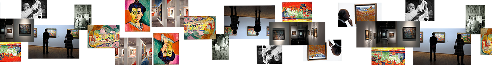

Se dice de los movimientos vanguardistas que son una "actitud ante el arte". En el caso del fauvismo, sus artistas fueron unidos por la actitud violenta con la que se enfrentaban a los convencionalismos de principios del siglo XX. Rechazaban así las reglas y los métodos racionales establecidos.
Los Fauvistas creían que a través de los colores podían expresar sentimientos. Decretando esto como su cometido en cada obra los fauvistas no buscaban la representación naturalista sino que buscaban realzar el valor del color en si mismo y hacerlo el protagonista.
Sus creaciones respondían a un ejercicio de sintonización.... buscan la máxima intensidad emocional combinado con la máxima simplificación de elementos.
